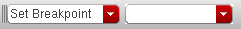

Configuration of Conditional Breakpoints
You can configure breakpoint conditions to suit your debugging needs. For example, you can temporarily disable a breakpoint without deleting it or change the entry or exit criteria for a function breakpoint.
Enabling and Disabling Conditional Breakpoints
The SKILL IDE debugger provides the following conditional breakpoint options to help you enable or disable conditional breakpoints:
- Conditional: The debugger stops the program execution at the breakpoint only if the breakpoint condition is true.
-
Disabled: The debugger never pauses the program execution at the breakpoint, whether or not the breakpoint condition is true.
This variation of conditional breakpoint disables a breakpoint while preserving the location and condition of the breakpoint. You can use this option instead of deleting the conditional breakpoint. The advantage of using this option is that you do not have to find the location of the breakpoint in the source to set it again. -
Enabled: The debugger always pauses the program execution at the breakpoint, whether or not the breakpoint condition is true.
This variation of conditional breakpoint is useful in cases where you want to test the state of the program under all conditions. For example, you define a variablei=i+2in your program and set the breakpoint condition such that the breakpoint is triggered wheni==8. Now, if the value ofistarts at 1, the breakpoint is never triggered sinceiwill always have an odd value. In such a scenario, to see how the value ofiprogresses through each iteration, even wheni==8is not true, set the conditional breakpoint to Always.
Specifying Breakpoint Entry and Exit Criteria
Function breakpoints pause the program execution when control enters or exits the function to which the breakpoint is applied. You can specify an entry or an exit criteria for a function such that the breakpoint is triggered only when the given criteria is met. For example, if you have a function myTest(object) you can set a breakpoint that activates only when the argument object has a specific value (say object==4) on entry to the function. You can also specify an exit criteria, which is tested before the function returns the control back to the program.
You have the following choices for setting up an entry and exit criteria:
- Break on Both Entry and Exit when: The same condition is defined for both function entry and exit. When you use this option, the execution is suspended twice, both when the control enters and leaves a function. This option is useful when you want to test how a particular condition affects a function.
-
Separate Entry/Exit Criteria: Different conditions are defined for function entry and exit. Use this option when you want to test the return value of the function. For example, if you are aware that the value of
objectchanges during the course of execution of themyTestfunction, but are only interested in knowing when it becomes0, you can set the exit criteria toobject==0.
Related Topics
Setting Unconditional Breakpoints
Setting Conditional Breakpoints
Setting Unconditional Breakpoints
When you execute a program on which breakpoints have been set, the debugger stops just before executing the line of code that contains the breakpoint and highlights it in yellow. At this point, you can evaluate variables, set more breakpoints, or use other debugging features.
Setting Unconditional Line Breakpoints
To insert breakpoints on a particular line in your code:
- In the source code pane, click the line of code where you want to set a breakpoint and do one of the following:
A sign displays in the left margin of the source code pane, next to the selected line of code, indicating that an unconditional breakpoint has been set for that line.
append, append1, car, cons, copy, list, listp, arrayref, defstructp, strcmp, strlen, strncmp, substring, difference, fixp, eq, equal, memq, nequal, null, mapcan, mapcar, return, boundp, and apply.Setting Unconditional Function Breakpoints
You can set a breakpoint on a function so that the breakpoint is triggered every time the function is called. Such breakpoints are also called entry breakpoints because these are set on the function entry points. As with line breakpoints, you can use the Set/Unset Breakpoint command to insert function entry breakpoints.
-
In the source code pane, click the line of code containing the function on which you want to set a breakpoint and do one of the following:
- Click in the left margin of the program statement.
-
Right-click the program statement and choose Set/Unset Breakpoint from the context-menu. The Function breakpoint dialog box displays. Click Enabled and then OK to set an unconditional function breakpoint.You can also set an unconditional function breakpoint using the Search toolbar. In the Search toolbar, choose Set Breakpoint from the first drop-down list box. Then, specify the name of the function you want to set the breakpoint on in the second drop-down list box, and press Enter.
A sign displays in the left margin of the source code pane, indicating that an unconditional breakpoint has been set for the selected function.
Related Topics
Configuration of Conditional Breakpoints
Setting Conditional Breakpoints
Return to top